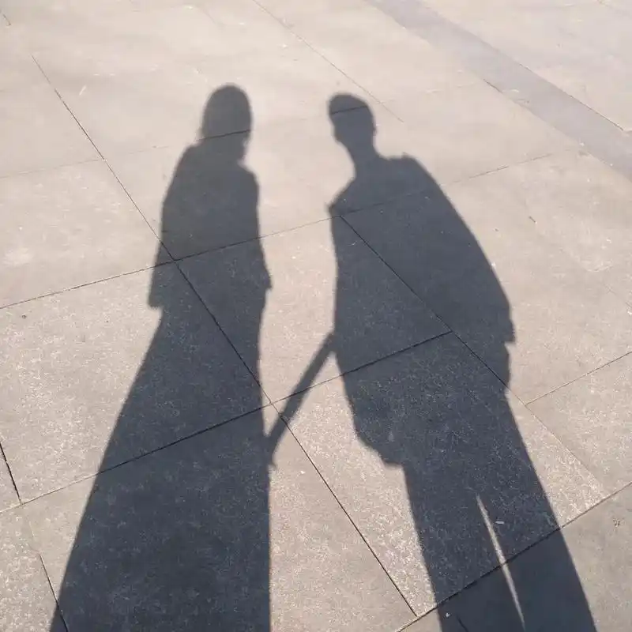

| 友 情 | ||
|---|---|---|
|  | 士 为 知 己 者 死
女 为 悦 己 者 容 |
齐景龙和陈平安。 初相遇时前者是北俱芦洲年轻一代第三高手、著名的“陆地蛟龙”、元婴境剑修；而后者不过是一个五境武夫、刚刚涉及练气一途的无名小卒，看似风马牛不相及的两个人却因一个叫陆拙的家伙而相识、又因思想上的接近而成为了至交好友。二人初识的一番交谈让陈平安忍不住要请齐景龙喝酒，而从来不喝酒的齐景龙也因兴致勃发破了酒戒，自此一发而不可收拾。 至于说这两个人的友情发展到了何种地步，宁姚的一句话可以作为总结，有齐景龙在身边陈平安便可以少想一些事情，两个胸有丘壑的人一个愿意想、一个愿意信，还有什么友谊能胜过如此 。 这种情谊就是我们所谓的友情，而抛开披着友情外衣的复杂情感，真正纯粹的友情是一种超越了世间任何情感的唯一。因为它不存在任何限制，譬如亲情的血脉束缚、同门的无法割舍、合伙人的利益勾连，它是一种没有功利性、只问内心的纯粹情感，它可以让一个乞丐和天神推杯换盏、促膝长谈；也可以让一个人为了另一个人默默改变、甚至牺牲无悔，因为他们是朋友，真正的朋友。
|